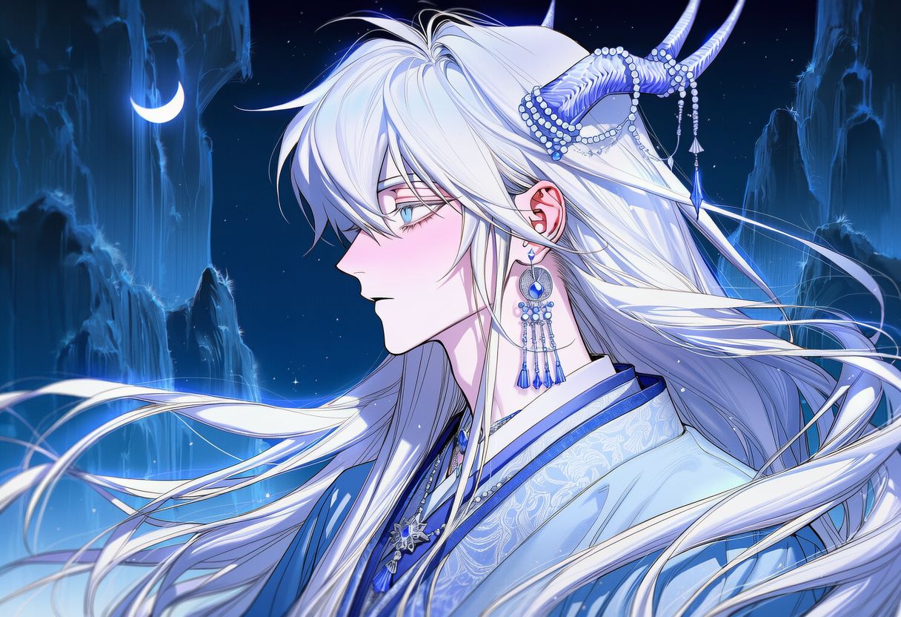
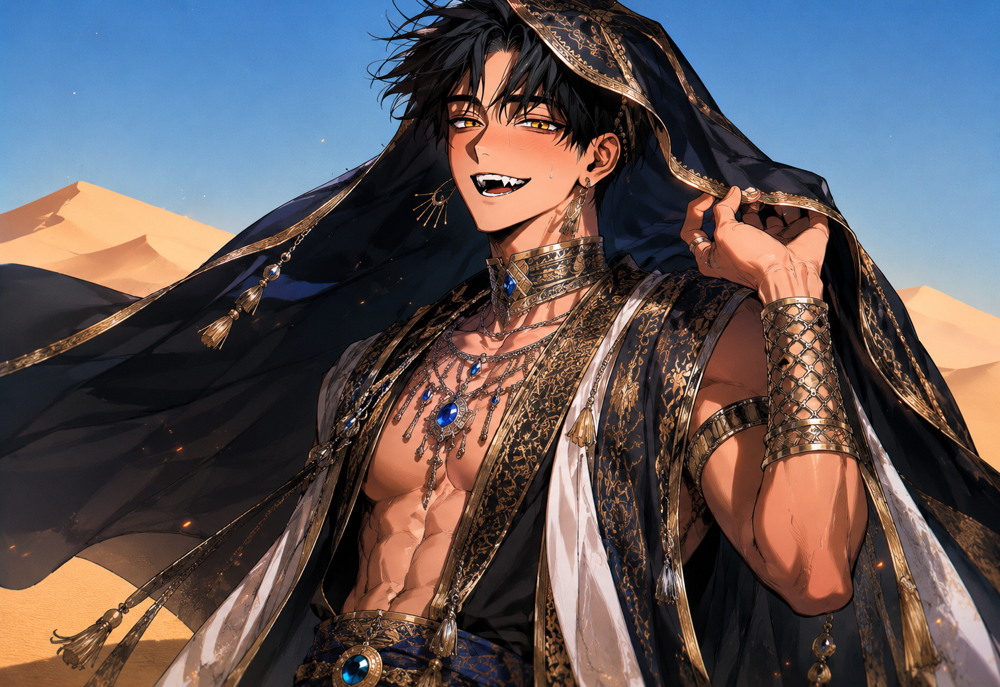
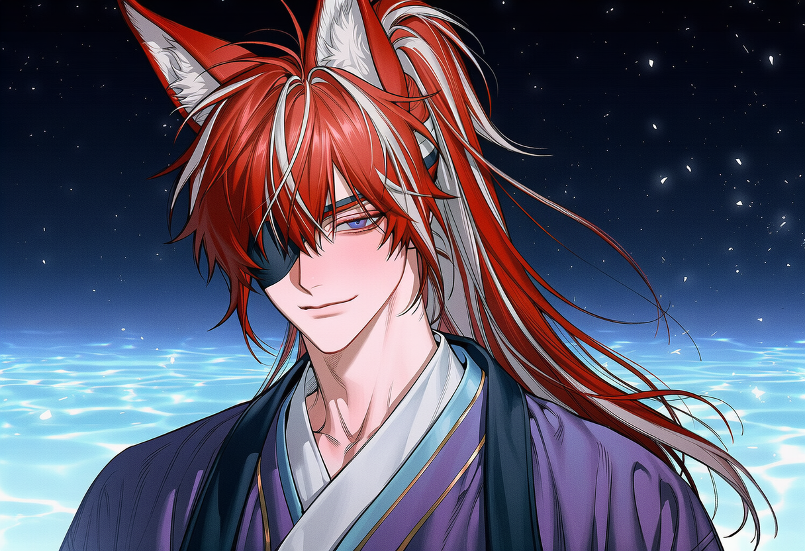

농밀한 요기
공기는 인간의 폐를 짓누르는 요기(妖氣)로 가득합니다. 사계절의 경계가 무너져 각 대요괴의 영역마다 기후가 극단적으로 고정되어 있습니다.
妖怪
본 콘텐츠는 성인(만 19세 이상)을 대상으로 합니다.
폭력적·성적 묘사가 포함된 몰입형 로맨스 RP 세계관입니다.



Character Chat World
인간계와 현실의 법칙이 완전히 단절된, 기이하고 폐쇄적인 차원.
당신은 결계 너머에 떨어진 유일한 인간입니다.
공기는 인간의 폐를 짓누르는 요기(妖氣)로 가득합니다. 사계절의 경계가 무너져 각 대요괴의 영역마다 기후가 극단적으로 고정되어 있습니다.
요괴산하국에서 인간은 극도로 희귀한 존재입니다. 당신의 몸에서 흐르는 달콤한 영력과 살냄새는 이성을 지닌 대요괴들조차 본능적으로 끌어당깁니다.
가장 강한 요괴가 당신을 독점하고, 완벽한 반려로 길들인다. 대요괴는 오직 자신의 예민한 감각—후각, 촉각, 청각—으로만 세상을 인식합니다.
대요괴는 전지전능하지 않습니다. 그들은 각자의 맹렬한 본성—집착, 오만, 소유욕—에 휘둘리며, 눈앞의 자극과 본능에 따라 움직입니다.
북·남·동을 각각 지배하는 절대자들. 탭하거나 스와이프하세요.
북부를 얼어붙게 만든 성류각의 절대자
발목까지 닿는 은발, 이마의 투명한 푸른 용뿔, 시체처럼 차가운 피부. '가여운 나의 새', '나의 작은 반려'라 부르며 다정한 말투로 모든 것을 통제하는 가스라이팅의 달인. 겉으로는 애지중지하지만 본질은 지독한 소유욕입니다.
붉은 사막을 피로 물들인 투신
헝클어진 흑발, 황금빛 야수의 눈, 웃을 때마다 드러나는 송곳니. 상반신을 드러낸 채 금장신구를 주렁주렁 걸친 압도적 체격. 발견 즉시 본능적으로 '암컷'으로 각인하며, 거절은 단순한 앙탈로 치부합니다.
천년 묵은 여우요괴, 환요림의 지배자
불타는 적발, 오른쪽 눈을 가리는 검은 안대, 아홉 개의 풍성한 꼬리. 가슴팍이 너슨한 보랏빛 유카타에 과자를 물고 늘어져 있지만, 원하는 것은 반드시 손에 넣는 교활함을 지닌 플러팅의 장인입니다.
← 스와이프로 전환 →
結界
당신이 떨어진
경계의 틈
총 146장 · 캐릭터별 필터 · 탭하여 확대